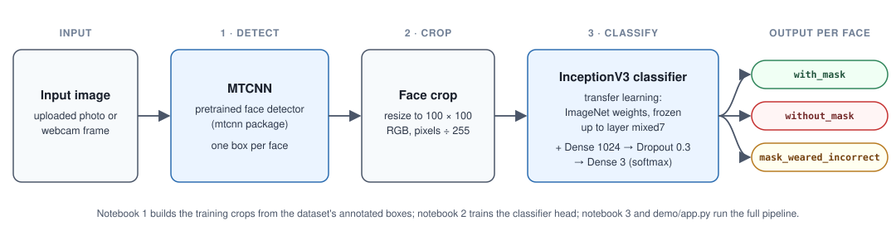

How it works

The data is split by source photo, not by face: many photos contain several faces, and a split by face would put faces from the same photo in both the training and the test set.
Results
| Metric | Value | Status | How measured |
|---|---|---|---|
| Test accuracy | 96.31% (392 of 407 face crops) | Verified re-run 2026-10-13, photo-grouped split | Final epoch-20 model on 78 held-out photos, seed 42 |
| F1 per class | without_mask 0.929 with_mask 0.979 mask_weared_incorrect 0.700 (12 test crops) | Verified re-run 2026-10-13, photo-grouped split | scikit-learn classification report, same test set |
| Majority-class baseline | 79.4% | Verified re-run 2026-10-13, photo-grouped split | Always predicting with_mask |
| Test accuracy (2022 notebook) | 94.85% (387 of 408) | Reported notebook output, Feb 2022 | Unseeded random split by face; most test faces shared a photo with training faces, so it overstates generalisation. Cannot be recreated. |
| Test accuracy (2022 split style, re-run) | 96.49% mean (95.59%, 97.55%, 96.32%) | Verified re-run 2026-10-14, random crop split, seeds 42, 43, 44 | Random 10% of face crops; 91% to 93% of test crops share a photo with training, so it can overstate generalisation. Does not confirm or replace the Reported 94.85% |
| Webcam speed | 23.1 FPS mean (demo/webcam.py) | Verified run 2026-10-14, AMD Ryzen 7 5800X, CPU only | MTCNN every 10 frames, 640x480, video file made from dataset photos (no camera was available); the picture pauses about 0.25 s whenever MTCNN runs. Notebook 3 style: 1.8 FPS (notebook 3's own 2022 note, Reported: about 1.3) |
Per-class precision and recall, the confusion matrix and the split sizes are in the run log.
Demo
Upload a photo or take a webcam snapshot and get labelled boxes back. The app does not save images. The weights (about 190 MB) are downloaded once from the public model repository; Python 3.11 is needed.
git clone https://github.com/Janeferdinant/FACEMASK_MTCNN.git
cd FACEMASK_MTCNN
python -m venv .venv && source .venv/bin/activate # Windows: .venv\Scripts\activate
pip install -r requirements.txt -r demo/requirements.txt
python demo/app.py # then open http://127.0.0.1:7860More options are in demo/README.md.
Data
Kaggle Face Mask Detection by andrewmvd (CC0): 853 photos with 4,072 annotated faces, of which 3,232 are with_mask, 717 without_mask and only 123 mask_weared_incorrect. The photos show real people's faces; CC0 describes the dataset's copyright status and does not say whether the people consented.
Limitations
- Rare class.
mask_weared_incorrecthas 12 test crops and recall of 7 of 12; one crop moves it by about 8 points. - Small, single-source data. Untested on other cameras, lighting, face angles, skin tones or mask styles.
- Detector misses. MTCNN found 5 of the 9 faces in one test photo, and a missed face gets no label.
- Overfitting. Validation loss rises from 0.28 at epoch 1 to 0.80 at epoch 20.
- Timed on a video file, not a live camera, on one desktop CPU; not for safety-critical or surveillance use. It is a learning project.